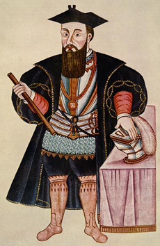

GamaSoft name is inspired by Vasco Da Gama, the portuguese navigator who opened a new route from Europe to India, disrupting medioeval spices market.
Da Gama's discovery of the sea route to India was significant and opened the way for an age of global imperialism and for the Portuguese to establish a long-lasting colonial empire in Asia. Traveling the ocean route allowed the Portuguese to avoid sailing across the highly disputed Mediterranean and traversing the dangerous Arabian Peninsula. The sum of the distances covered in the outward and return voyages made this expedition the longest ocean voyage ever made until then, far longer than a full voyage around the world by way of the Equator. Wikipedia
I have two decades of experience in building software projects. I started TDD and Agile in 2001, working in many industries with small and big teams, in startups and corporations. I always tried to make a difference and deliver not only working software but regularly exceed customer expectations. I believe that to create a total quality we need to improve together the process, the code and the environment in a continuous virtuous circle.